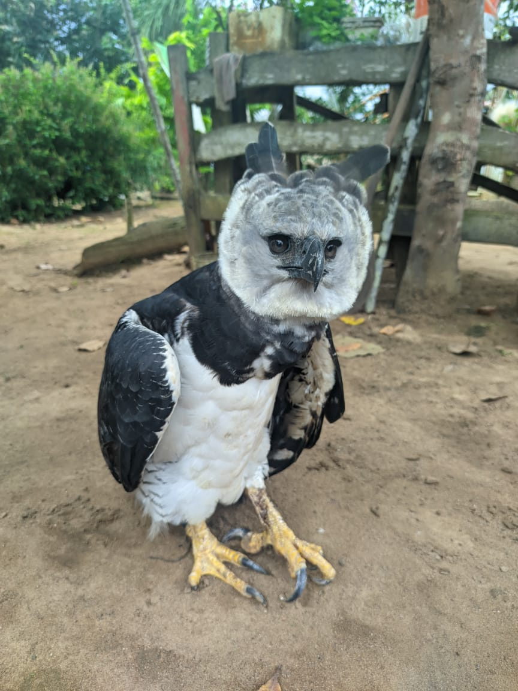

.png)
🌿 📢 NOTÍCIAS & EVENTOS | Eco Cidades

Gavião-Real é
Resgatado pelo
Ibama no Amazonas:
Ação Protege
Espécie Ameaçada
Gavião-Real é Resgatado pelo Ibama no Amazonas: Ação Protege Espécie Ameaçada
Um exemplar de Gavião-Real (Harpia harpyja), uma das aves de rapina mais icônicas e ameaçadas da América do Sul, foi resgatado pelo Ibama no estado do Amazonas. A ação reforça a importância da preservação dessa espécie, que sofre com a destruição de seu habitat e a caça ilegal.
Detalhes do Resgate
O resgate ocorreu após denúncias de moradores da região, que avistaram o animal em condições vulneráveis. A equipe do Ibama agiu rapidamente para garantir a segurança do gavião, que foi encaminhado para avaliação veterinária. Inicialmente, acredita-se que o animal tenha sido vítima de desmatamento ou tráfico de fauna silvestre, crimes comuns na região amazônica.
A Importância do Gavião-Real
Considerado o maior gavião das Américas, o Gavião-Real é um predador topo de cadeia, essencial para o equilíbrio dos ecossistemas florestais. Sua presença indica a saúde da floresta, mas a espécie está classificada como "vulnerável" devido ao avanço do desmatamento e à fragmentação de seu habitat.
Próximos Passos
Após a recuperação, o animal passará por um processo de reabilitação e, se possível, será reintegrado à natureza. O Ibama reforça a necessidade de denúncias contra crimes ambientais e destaca que a preservação de espécies como essa depende da conscientização e da ação coletiva.
Fique atento! Acompanhe nossas redes sociais para mais notícias sobre meio ambiente e conservação da biodiversidade brasileira. E caso deseje ajudar, denuncie crimes ambientais pelo canal de Denuncie Aqui de nosso site: Denunciar ou pelo telefone do Ibama e Compartilhe esta notícia e ajude a conscientizar!
Detalhes do Resgate
O resgate ocorreu após denúncias de moradores da região, que avistaram o animal em condições vulneráveis. A equipe do Ibama agiu rapidamente para garantir a segurança do gavião, que foi encaminhado para avaliação veterinária. Inicialmente, acredita-se que o animal tenha sido vítima de desmatamento ou tráfico de fauna silvestre, crimes comuns na região amazônica.
A Importância do Gavião-Real
Considerado o maior gavião das Américas, o Gavião-Real é um predador topo de cadeia, essencial para o equilíbrio dos ecossistemas florestais. Sua presença indica a saúde da floresta, mas a espécie está classificada como "vulnerável" devido ao avanço do desmatamento e à fragmentação de seu habitat.
Próximos Passos
Após a recuperação, o animal passará por um processo de reabilitação e, se possível, será reintegrado à natureza. O Ibama reforça a necessidade de denúncias contra crimes ambientais e destaca que a preservação de espécies como essa depende da conscientização e da ação coletiva.
Fique atento! Acompanhe nossas redes sociais para mais notícias sobre meio ambiente e conservação da biodiversidade brasileira. E caso deseje ajudar, denuncie crimes ambientais pelo canal de Denuncie Aqui de nosso site: Denunciar ou pelo telefone do Ibama e Compartilhe esta notícia e ajude a conscientizar!